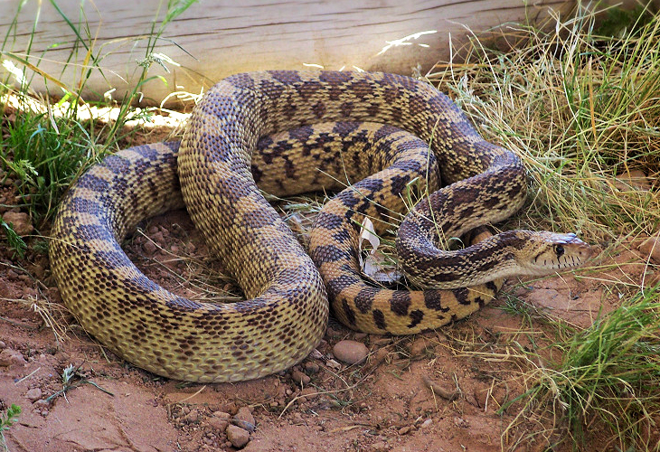

SERPIENTE TORO
Pituophis catenifer

Como defensa, agita y golpea la cola contra la hierba o las hojas secas para imitar el sonido de una serpiente de cascabel. También se enrosca y aplana la cabeza para parecerse a una víbora.
- Nombre científico: Pituophis catenifer
- Mimetismo: Agita y golpea la cola contra la hierba o las hojas secas para imitar el sonido de cascabel; se enrosca y aplana la cabeza para parecerse a una víbora.
- Hábitat: Bosques de Norteamérica, desde el sur de Canadá y Estados Unidos hasta el norte y centro de México.
- Sentidos: Sonido y visión.
- Uso: Supervivencia.
- Función: Advertir y pretender.